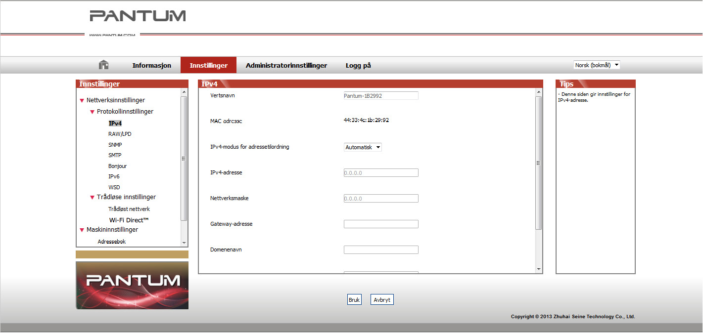

4. Nettverksinnstillinger for kablet nettverk (For skrivermodeller med kablet nettverkstilkobling)
Du må kanskje angi noen nettverksparametere på skriveren. Disse parameterne kan angis i den integrerte nettserveren.
4.1. Angi IP-adresse
IP-adressen til skriveren kan fås automatisk igjennom DHCP-funksjonen eller angis manuelt.
| Automatisk innstilling
DHCP automatisk innstillingsfunksjon er aktivert som standard.
1. Koble skriveren til nettverket via en nettverkskabel og gjennomfør oppstartsprosedyren.
2. Skriveren vil automatisk motta serverens tildelte IP-adresse. IP-adressen som ble mottatt automatisk, kan brukes etter noen få minutter.
|
|
merk:
|
• Hvis DHCP ikke automatisk kan motta en IP-adresse, vil skriveren automatisk bruke standard IP-adresse: 169.254.xx.xx.
• Grunnet DHCP-egenskapene kan IP-adressen som automatisk er tildelt skriveren av nettverket endre seg hvis skriveren ikke har blitt brukt på en lang stund eller nettverkets tilgangspunkt endres. Dette kan medføre at skriveren ikke kan kobles til. Det anbefales å aktivere DHCP-funksjonen og knytte IP-adressen som automatisk er tildelt av nettverket, til skriverens Mac-adresse.
|
| Manuell innstilling
Skriv inn skriverens IP-adresse i nettleserens adresselinje for å åpne den integrerte nettserveren.
1. Klikk Innstillinger på navigasjonslinjen for å åpne grensesnittet Innstillinger.
2. Velg nettverksinnstillinger – IPV4-innstillinger.
3. Angi tildelingsmodus for IP-adresse (manuell), IP-adresse og nettverksmaske. Andre elementer er valgfrie.
4. Klikk Bruk for å lagre innstillingene.
4.2. Installer skriveren på nettverket
I denne innstillingen er skriveren direkte koblet til nettverket og kan stilles inn til å tillate alle datamaskinene i nettverket å skrive ut direkte på skriveren.
1. Før du starter skriveren skal nettverkskablene først kobles til nettverksporten på skriveren for å opprette direkte tilkobling til nettverket.
2. Slå på skriveren og vent til statusindikatoren på kontrollpanelet viser Klar-status som vist nedenfor.

3. Sett inn skriverens CD i datamaskinen. Hvis installasjonsprogramvaren ikke starter automatisk, gå til filen «setup.exe» på CD-en og dobbeltklikk for å kjøre filen.
4. Følg betjeningsinstruksjonene i installasjonsprogrammet.
5. Fortsett for å fullføre installasjonen.
4.3. Registrere nettverksprodukter
4.3.1. Vise eller endre nettverksinnstillinger
Du kan bruke skriverens integrerte nettserver til å vise eller endre IP-innstillingene.
1. Trykk og hold inne «Avbryt/Fortsett»-knappen på kontrollpanelet for å avbryte DEMO-informasjonssiden og vise IP-adressene til skriveren. DEMO-siden kan skrives ut ved å trykke og holde inne knappen på kontrollpanelet (se figuren nedenfor) i hvilemodus.
2. Skriv inn skriverens IP-adresse i nettleserens adresselinje for å få tilgang til den integrerte nettserveren.
3. Klikk kategorien Innstillinger for å vise nettverksinformasjon. Endre innstillingene etter behov.

4.3.2. Angi eller endre nettserverens påloggingspassord
Bruk den integrerte nettserveren til å angi et nettverkspassord eller endre eksisterende passord.
|
|
merk:
|
• Standard brukernavn er «admin», mens førstegangspassord er «000000».
|
1. For å åpne den integrerte nettserveren må du først logge inn.
2. Klikk kategorien Administratorinnstillinger.
3. Skriv inn det nye passordet i passordboksen og boksen Bekreft passord.
4. Klikk på knappen Bruk nederst i vinduet for å lagre innstillingene.
4.3.3. Gjenopprette til fabrikkinnstillinger
Hvis du vil tilbakestille alle skriverinnstillingene, kan du gjenopprette fabrikkinnstillingene ved å trykk og holde inne «Avbryt/Fortsett»-knappen når skriveren er slått av for å slå den på og holde den inne i 10 sekunder frem til skriveren går inn i Klar-status for å fullføre tilbakestillingen.